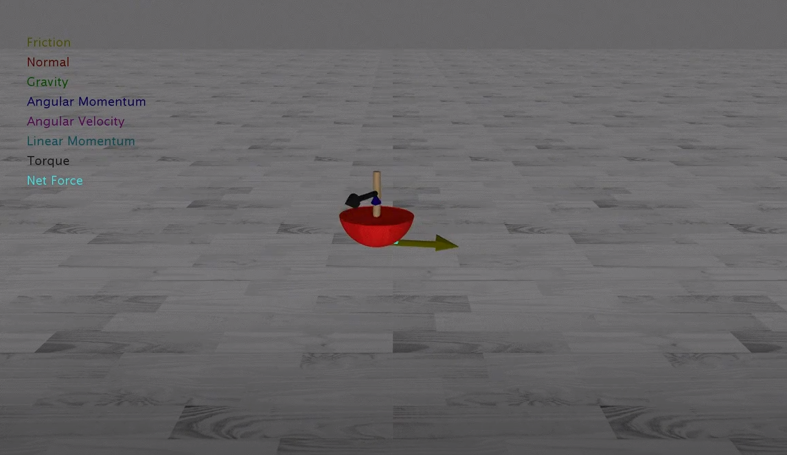

Cristian Bicheru
Mechanical Engineer
About Me
I’m a passsionate, aspiring Mechanical Engineer from Waterloo, Ontario in my first year at the University of Waterloo. I’m currently seeking an internship or employment to gain practical experience and to expand my skillset.
Tools and Technologies
C  |
C++  |
Python  |
PyTorch  |
TensorFlow  |
Node.js  |
Java  |
Google Cloud Platform  |
Projects
| Fast-TA |
Arith |
| Tippe Top Simulation  |
Modeling Electrostatics |